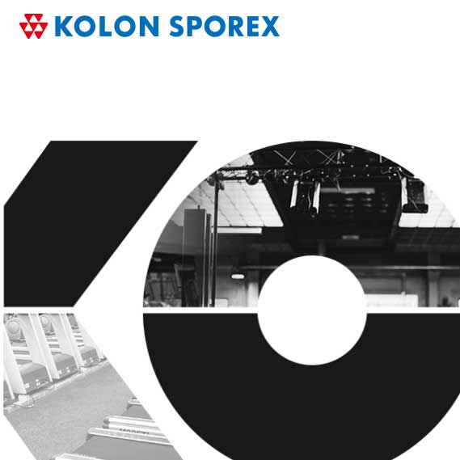

포트폴리오 인트로 및 비디오 섹션
Jinareum's Portfolio
Slow but Steady Development
better than yesterday
원활한 커뮤니케이션과 효율적인 코드 작성을 추구하며 웹을 만듭니다!
Portfolio :D
List of projects that participated
제가 참여했었던 프로젝트를 소개합니다!
치열하게 디자인 분석을 하고, 코드를 입력하며 정성을 쏟아 참여했습니다.
-

학교 안전교육 전문강사 인력풀
퍼블리싱 : front + admin 100%
-

학교안전공제회
퍼블리싱 : front 50% + admin 100%
-

코오롱스포렉스 아시아드 볼링장
퍼블리싱 : front 100% + admin 100%
-

코오롱스포렉스 아시아드점
퍼블리싱 : front 100%
-

픽앤아이(PNI)
퍼블리싱 : front 20% + admin 100%
-
픽앤아이(PNI) 테마 작업
퍼블리싱 : front 100%
-
옐로폼
퍼블리싱